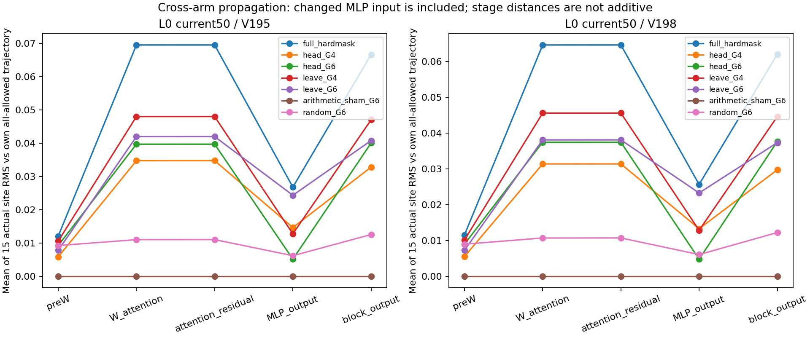
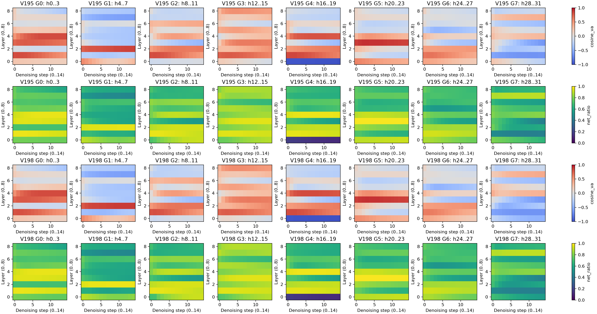

2026-10-04 · 最新：第1层四个head的选择性干预，18条实际执行完成
有进展，但没有找到抓错的根因。
我们已经从“比较向量变化”走到“直接改网络内部，再看机械臂真的抓谁”。但必须承认：目前有效的是前9层的较大范围干预，还没有找到能单独修好问题的小部件。
这是12厘米临界场景、两份未来生成的随机起点。原来的15／18厘米失败仍未解决；不能把这批当作成功率，也不能叫它“牛奶脑区”。
1. 我们怀疑什么，具体动了哪里？
此前，切掉前9层“未来画面向量 → 当前画面向量”的读取，能让两组都抓牛奶。于是大胆猜：其中少数头，可能就是把动作带向错误目标的关键通路。
270处真实数组比较给出了两个候选：第1层16–19号头的两项改动近乎反向抵消；24–27号头的两项改动偏同向。我们事先把后者登记为主候选，检验它是否足够修正抓取。这里的编号从0开始；它们不是别的层里同编号的头。
每头128维→W输出投影→与原状态相加→MLP更新→动作向量→MuJoCo抓取
改动只发生在产生首个16步动作块的前15次去噪。随后撤去head改动；第一块执行后重新拍照，后续7轮全部原生推理。一次去噪步骤不是一次机械臂动作。
输入、真实head轴和全部实验范围

195／198仅表示未来生成的两份初始随机数组；动作噪声、运行时种子均195。当前视觉50行，未来视觉200行，动作16行。head在W投影之前取真实32×128轴；没有把投影后的4096维随意切块。
4-head条件仅改第1层；前9层全切／保留组条件覆盖第1～9层。全部非原生条件使用同一个当前＋动作66行的全连接接口底座。head改动在去噪索引0～14有效；索引15～29接口底座继续，但head改动撤去。其余视觉行及文字返回保留原生。
等强度随机对照使用独立CPU随机方向，按4头整体范数匹配，非逐头匹配，实际BF16舍入后30处范数误差均在预设10%以内。随机方向只有一套，不能据此判断普遍特异性。
2. 实际抓到了什么？
| 网络改动 | 未来起点195 | 未来起点198 |
|---|---|---|
| 原生 | 奶酪盒，第68步 | 牛奶，第64步 |
| 连接全保留对照 | 奶酪盒，第70步 | 牛奶，第64步 |
| 前9层全部头切边 | 牛奶，第61步 | 牛奶，第64步 |
| 只切第1层16–19号头 | 奶酪盒，第70步 | 牛奶，第64步 |
| 只切第1层24–27号头（主猜想） | 奶酪盒，第69步 | 牛奶，第64步 |
| 前9层切边，但第1层16–19号头保留 | 未满足严格抓起 | 牛奶，第64步 |
| 前9层切边，但第1层24–27号头保留 | 牛奶，第60步 | 牛奶，第64步 |
| 同数值替换对照 | 奶酪盒，第70步 | 牛奶，第64步 |
| 24–27号头等强度随机方向 | 奶酪盒，第68步 | 牛奶，第64步 |
表中第N步是连续5条合格记录的第一步（例如69～73），不是第5条的确认时刻。严格“抓起”要求两侧指垫接触、抬高超过2厘米、连续5条状态记录；抓起不等于完成放篮任务。
当前：只切第1层24–27号头／195，仍抓奶酪盒，第69步。MuJoCo实际执行。
3. 数字改变了，为什么还不算找到机制？
同一195起点，单改24–27号头后，首轮XYZ动作与全连接对照的RMS距离约0.00228；前9层全切为0.26697。前者仍抓奶酪，后者抓牛奶。内部候选比较显眼，并没有带来足够的行为纠正。
这次已逐段查到真实传播：只改24–27号头，195组第1层当前视觉状态的差异，在attention与原状态相加后为0.03969，经过MLP并再次相加后为0.04004。差异没有在这里消失；第36层动作状态仍有0.01318的差异，实际却没有改抓牛奶。
所以，“第1层MLP把这次改动擦没了”不符合测量。但差异存在，并不说明它代表正确目标。还没定位到哪个下游计算决定抓谁，也没证明模型记住了某条示范。
以上均为前15次去噪、与同起点全连接对照比较的RMS均值。它们是数组距离，不是厘米、概率或可相加的功能占比；当前视觉与动作是不同状态，不能直接当成信号保留百分比。
真实传播图与全部统计

展开候选head的真实几何比较

4. 现在能说找到“语言区、运动区”了吗？
不能。暂时只能说：这条读取通路能影响当前场景的真实动作；某个头变化大，不代表它专门认牛奶。若暂时抑制一个小部分，只破坏选目标、不破坏一般抓取，再用随机部分作对照，才更接近功能定位。
我们借鉴物体定位的head因果干预研究与VLA内部MLP单元干预研究，用“记录活动 → 暂时改变 → 看真实行为”的方法。论文里的层号和功能没有直接搬到Cosmos。
5. 下一步怎样避免继续兜圈子？
下一轮只排除一种“假救回”：前9层切边后，是不是不管说什么都偏向牛奶？固定同一场景、全部噪声与这套内部改动，只把目标指令换成奶酪盒；同时保留原生和全连接对照。如果两句都抓牛奶，就不能说修好了按语言选目标；如果分别抓对应物体，才支持这条通路有目标选择作用。
这轮尚未执行。它测试的是语言与具体内部通路的因果配合；不会因为一次抓对，就宣称找到了“牛奶脑区”。抓取接触、抬升与最后搬运仍分开记录。
代码、真数组、录像与复现范围
18首轮预测＋126后续真实反馈预测，共4320次forward、144份执行记录、2304步动作。8条历史控制的全部129物理状态、5份动作／轨迹JSON、8张反馈PNG和64份整模型记录复算一致；119组后续整噪声配对通过。
CPU独立复核已完成：2430处真实内部记录、540份层边界及144份执行记录全部通过；作图没有新跑模型或物理。
公开18条实际录像、全部144份执行模型记录与物理数据；全部2430处内部记录的来源SHA，每组首处完整真实Q/K/V与head／5段传播数组、第1次去噪的全部37个层边界。其余完整原数组与逐步边界保留A6000。没有删除旧实验文件。